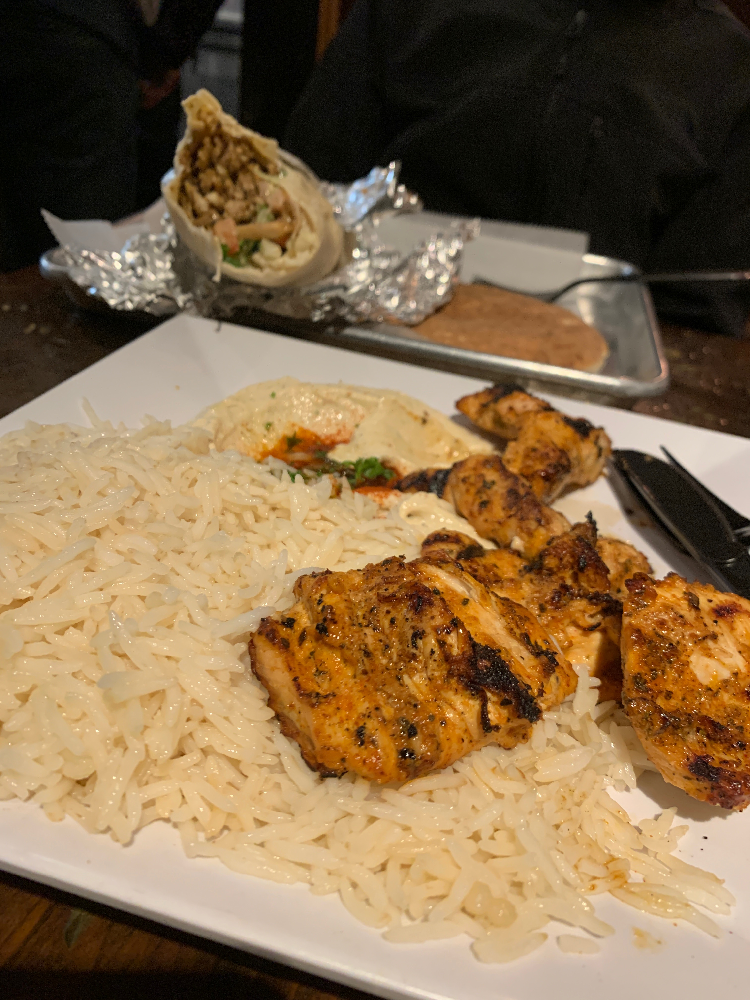
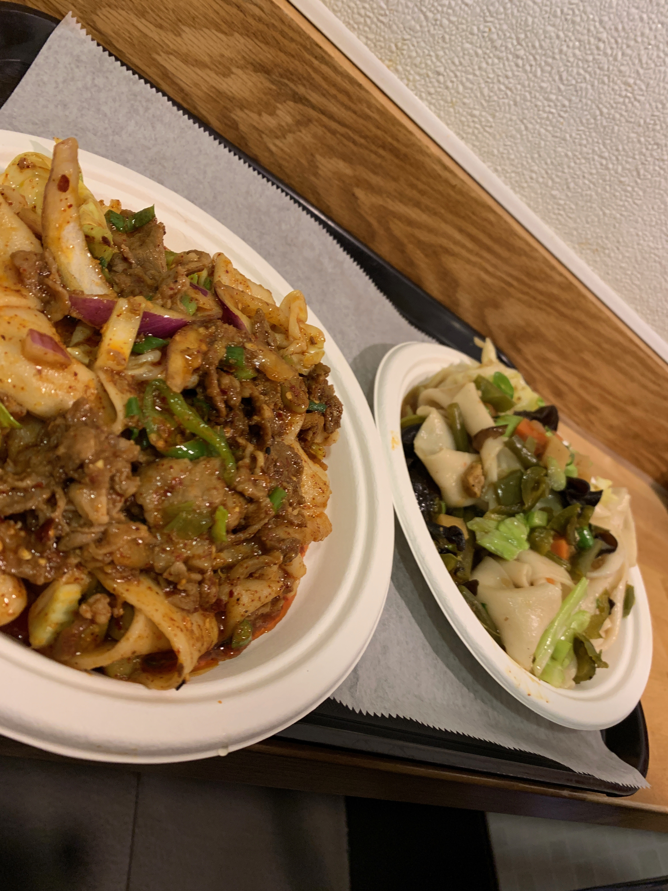
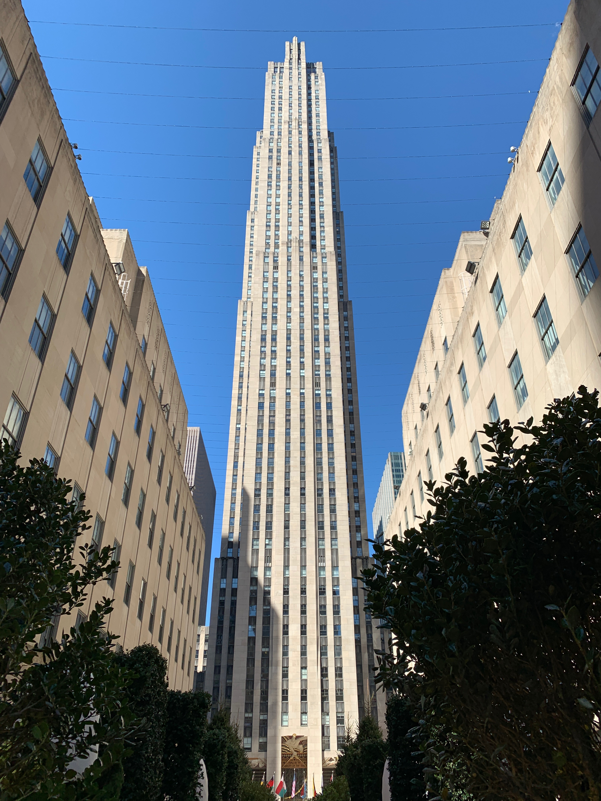
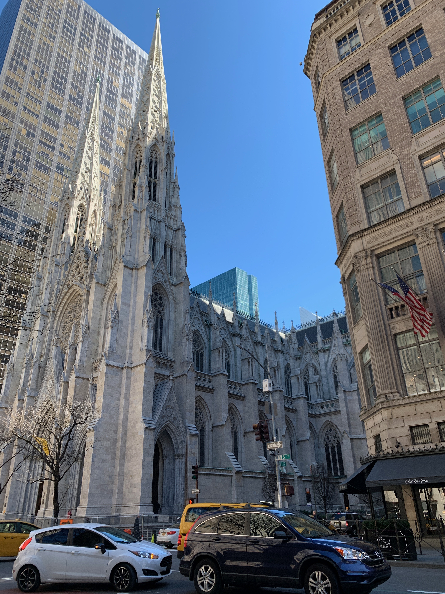
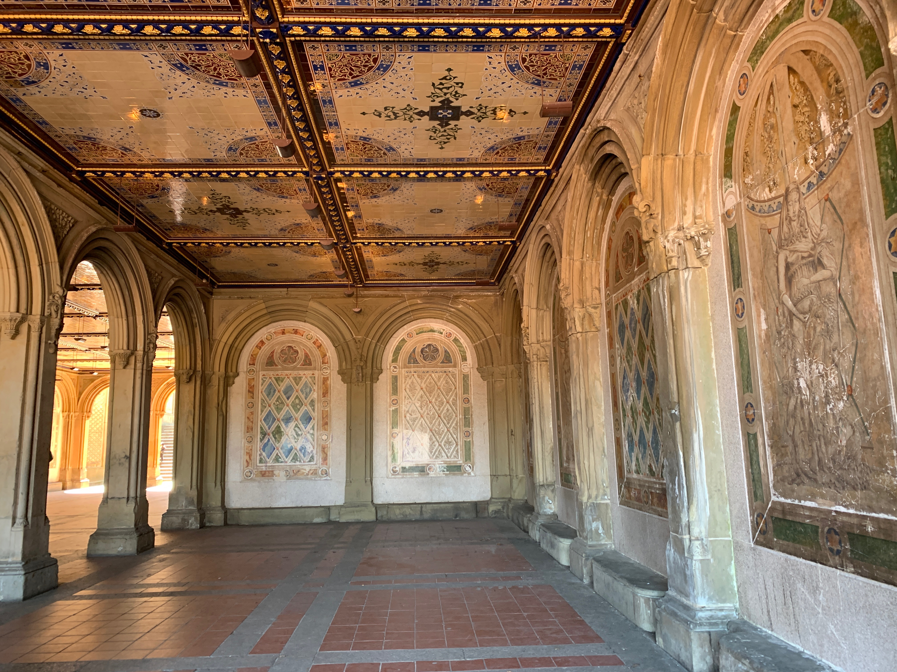
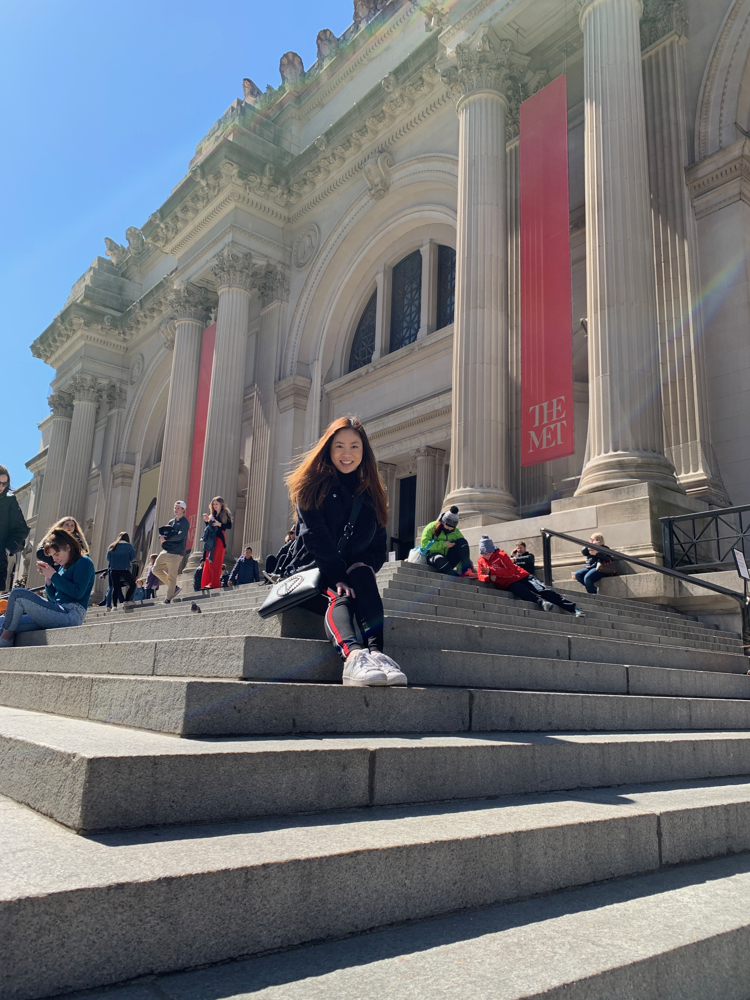
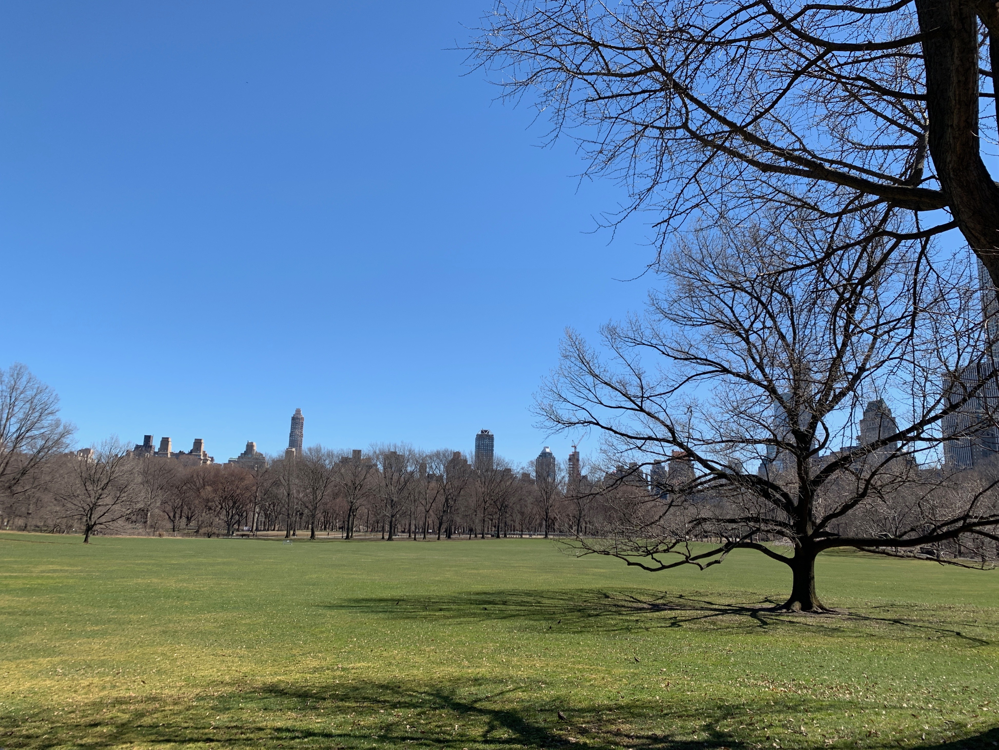
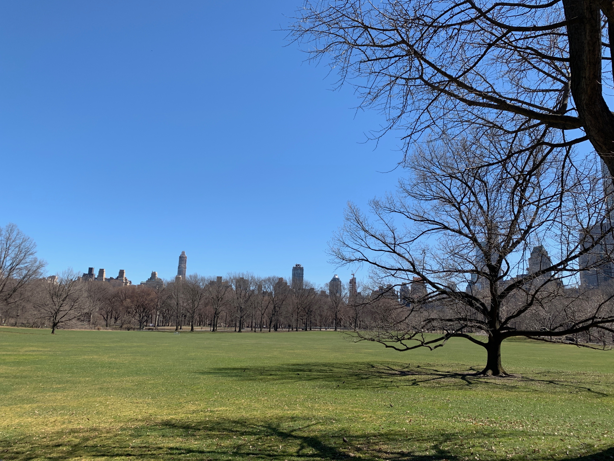
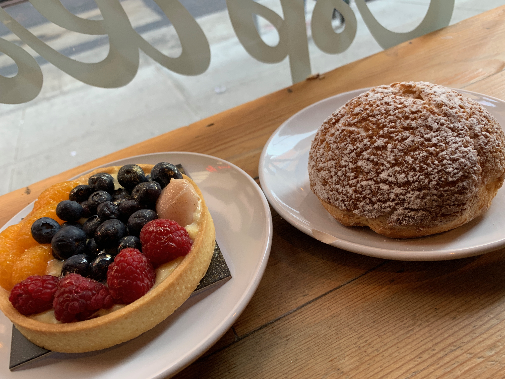
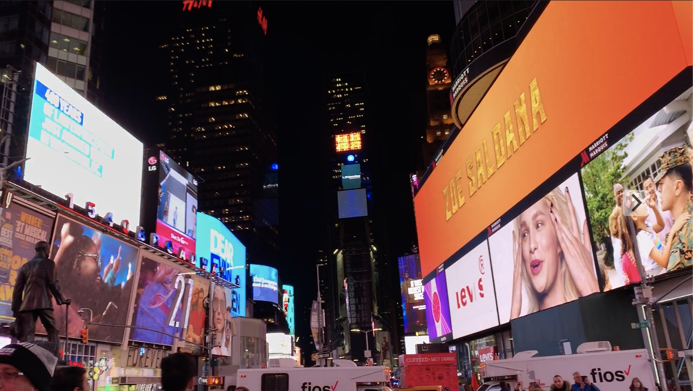

My Recent Trip to New York City: Day 1 & 2

Day 1
On the first day, I flew out from LAX at 7am and landed in New Jersey at Newark Liberty International Airport. What's funny about landing in New Jersey was that I had forgotten to do research on getting from NJ to Manhattan, but thankfully, I was able to quickly do some research when we landed and the staff in the airport were kind enough to assist us and direct us in the right direction regarding the types of transportation that was available. In the end, we took the air train from the airport into Manhattan and landed at Penn Station. Our Airbnb was in Queens and getting to Queens was a struggle, especially for someone who had not been to New York before and never had to deal with public transportation. From Penn Station we had to walk to another line of the subway and eventually got to Queens. When we finally got to our Airbnb, it was already 7pm and we were tired from the hour or so journey from the airport and quickly stepped out for dinner in Queens at a Mediterranean restaurant called Duzan Mediterranean Grill (My next blog post will go more indepth on the meals I had).
Then, we to our room to do a little more research for the next day and sleeping early.
Day 2
We took the subway into Manhattan and the first thing we did was eat lunch at Xi'an Famous Food. Xi'an Famous Food was recommended to us by someone who had recently gone to New York City and he said it was the best meal he had on the trip and they definitely did not dissapoint.
Later that day, we went to get another order of Xi'an Famous Food to go as a snack. After eating, we went into the NBA Store which we had saw around the corner from Xi'an's and the store is definitely worth a stop if you are into basketball at all. Not only do they have paraphernalia of all the teams, but they also have signed paraphernalia by present and past NBA players which was really cool to look at and was available for purchase. From there, we walked from the NBA Store all the way to Central Park, which was nice because it was only about a 20-minute walk all while hitting some touristy spots. Along the way, we got to see high end luxury stores and Rockefeller Center.

It was also cool to see the architecture in New York City during the walk and it reminded me of Europe quite a bit. Throughout the walk, I saw lots of churches and made me reminisce walking in Italy and France.
When we finally got to Central Park, we spent about an hour or two riding through the park on bikes. The ride was definitely one of my favorite parts of the trip. What was cool was as we were riding our bikes, there were people filming a scene in the park. In the park, we saw the Bethesda Fountain and Terrace. The terrace was gorgeous as it was lined with tile and unfortunately, the fountain was not running.
Next on the trip around Central Park was to the Metropolitan Museum, where I just wanted a photo on the Met Steps (just a girl trying to live her dream as Gossip Girl LOL).
After the visit to the Met Steps, we just finished biking around the park and stopped to take a few photos of the city because the skyscrapers looked gorgeous from inside the park.
 

After we finished biking around Central Park, we went to the Museum of Modern Art, which was not as exciting as I thought it would be, but mainly because I am not the biggest fan of museums and do not have the patience to read the plaques. However, it was relatively affordable, with tickets starting at $14 for students. Afterwards, we wandered down the streets window shopping on our way to Bibble and Sip. The place was small and packed and had the most gorgeous display of pastries and desserts. It was so difficult to choose what to get but we finally decided on a fruit tart and an earl grey cream puff. Let me tell you, despite it being a little pricey, this was worth every penny and was UH-MAY-ZING.
Next came a visit to Time's Square, which was just as exciting as I thought it would be. Seeing the bright lights at night was beautiful.
Our last stop of the night was Grand Central Station, which was probably one of the top places I visited on the trip. The station definitely was a work of art, from the gorgeous architecture to the mural painted on the ceiling. It definitely took my breath away and was worth the visit, even if it was for ten minutes. It would have been amazing to take a train out from Grand Central Station, maybe next time.